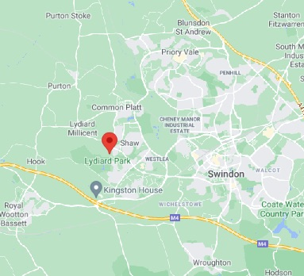

Oliver St John born:? died: 10 April 1497 Fontrabia, Spain
First St John to live at Lydiard Park

Oliver St. John was the son of Sir Oliver St. John and Margaret Beauchamp.2 He married Elizabeth Scrope, daughter of Henry le Scrope, 4th Lord Scrope of Bolton and Elizabeth Scrope.2 He died before 10 April 1497 at Fonterabia, Spain.
He was also known as Oliver of Ewell.2 He lived at Lydiard Tregoze, Wiltshire, EnglandG.
Children of Oliver St. John and Elizabeth Scrope
Elizabeth St. John+3 d. 28 Jun 1516
Eleanor St. John
Margaret St. John
Sir John St. John+1 b. 1473, d. 1 Sep 1512
Oliver was the first St John to live at Lydiard Park. A house has stood at Lydiard since before the Domesday Book and it was one of many houses owned by Alfred of Marlborough. In the 12th century the estate passed to the Troisgots family and a corruption of their name gave us Lydiard Tregoze, which is used to distinguish the area around the house from the nearby village of Lydiard Millicent.
The current house, which shows evidence of medieval construction, was extended in the 17th century and rebuilt between 1745-9 (date stone in attic); this last remodelling has been attributed to Roger Morris for John, 2nd Viscount St. John. It is constructed from stone, ashlar Bath stone was used for the remodelling, with stone slate and lead roofs. The original house comprised a late medieval hall and cross wings. In the 17th century the cross wings were extended to form an H-plan. The mid 18th century remodelling was confined to south and east fronts, forming a central hall and interconnecting state rooms, library, dining and drawing rooms. The facade is strictly Palladian, based on Houghton Hall. It is two storeys high with three storey quoined corner towers and is of 11 bays, the centre three broken forward with a pediment rising through the roof balustrade and containing St. John arms and the motto SANCTUS IN TERRA BEATUS IN COELO. The central doorcase is Roman Doric, pedimented with a pair of glazed doors and lobed fanlight. To the ground floor there are 16-pane sashes with 9-pane sashes above, all restored. The estate was being broken up in the 1920s and in 1943, when Swindon Corporation bought it, it was in desperate need of repair. Swindon Corporation, followed by its successors have painstakingly restored Lydiard to some resemblence of its former glory.
Source
https://ancestors.familysearch.org/en/LZ6Z-4PJ/sir-oliver-st.-john-1st-baron-st-john-of-bletso-1398-1437